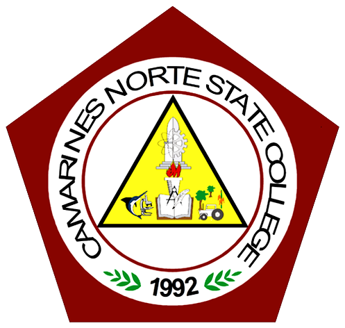

Full Story
Home /
Heroes
FRANCISCO “TURKO” D. BOAYES
Francisco "Turko" Boayes, a Bicolano World War II hero and leader of famous
"VinzonsCommand" of Camarines Norte
was the eldest son of Ishmael Ayyash,a
Syrian national of Jewish ancestry, who came to the Philippines with his two
businessmen counsins surnamed Abraham and Bichara. His Filipino mother was a
Spanish mestiza named Agapita
Jimenez Dames of Daet.
When his father died, he lived a hard life doing odd jobs and helped support
his sisters with their material needs.
He worked as a baggage boy in the market,
thus developing physical strength, stamina and endurance which later
on proved
to be his great personal asset.
"Turko", as he was fondly called, was with the late Gov. Wencesclao Q. Vinzons
as an aide, chaffeur and bodyguard,
when the first shot was fired against the
Japanese Imperial Occupation forces in Camarines Norte from December 19,
1941
to July 8, 1942.The Japanes invasion of Luzon was in full swing when Lt. Vinzons
assisted by his personal aide
Sgt. Boayes raided enemy garrisons from January to<
July of 1942.When Lt. Vinzons was captured and executed by
the Japanese on July 8,
1942 in his camp in Tulay Na Lupa. "Turko" reorganized the guerilla unit and palced
it under
his command. Most celebrated example his bravery was a guerilla surprise attack
to set free 30 Americans and Filipino
prisoners of war who were about to executed in the
town of Naga. From regimental commander, he was promoted to
the rank of Colonel.
Finally, on June 13, 1968, in a ceremony camp Aguinaldo he was awarded the Gold Medal
- the highest award
to a war Veteran of World War II,which was personally conferred
by then Pres. Ferdinand E. Marcos, the crowning
glory of his bravery and official recognition
of his heroism.

Museo Bulawan
Connected with us
Address:
3 Justo Lukban St, Daet, 4600 Camarines Norte
Phone:
0951 926 0196
Email:
bulawanmuseo@gmail.com
Visiting Schedule:
Monday-Friday, 9:00 AM - 5:00 PM
In collaboration with Camarines Norte State College

 Museo Bulawan
Museo Bulawan